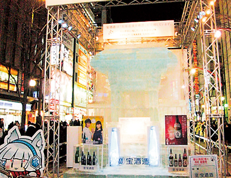
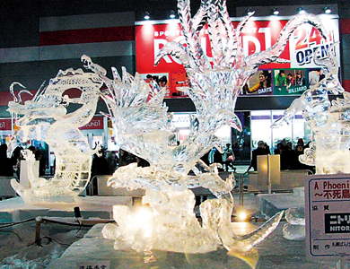
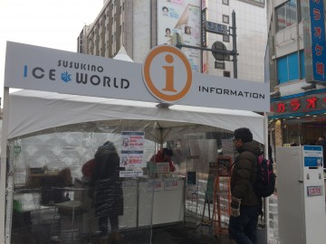
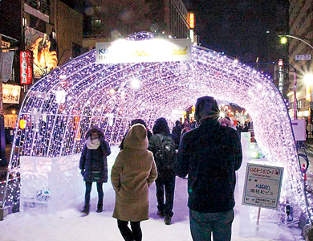
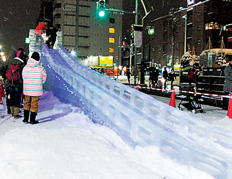

さっぽろ雪まつりの時期には、第3会場となるすすきので「すすきの氷の祭典」を開催。北海道最大の歓楽街が氷彫刻作品に彩られる。夜になると透明な氷像に街のネオンが映え、色とりどりの照明でライトアップされるものもあり、見事な細工が幻想的な美しさで目を楽しませてくれる。 恒例となっているのが、本物の毛ガニやサケといった魚介を丸ごと氷漬けにした「氷の水族館」。北海道らしさを豪快に表現すると共に意表を突いたアイデアに、観光客が感嘆の声を上げる。中には乗ったり、触れたりできる像が登場することもあり、氷のブロックを組み合わせたアイスバーでは、カウンターや棚、椅子に至るまですべてが氷でできた空間で、アルコールを楽しむことができる。
A・Bブロック
会場でお客様をお迎えする歓迎塔とメイン氷像が、繁華街に現れたクリスタルストリートのスタート地点です。オリジナリティ溢れる氷像をお楽しみください。
Cブロック
氷彫刻アーティストの登竜門、氷彫刻コンクールが行われます。繊細で幻想的な氷の世界をお楽しみください。
Dブロック
インフォメーションを設置し、会場内のご案内、市内の観光等のお手伝いをいたします。飲食が楽しめるアイスバーやフォトカードのプレゼントを行う撮影サービスのほか、喫煙所を設置。
Cブロック
撮影スポットとして大人気のファンタジックなイルミネーションロードを設置しています。また、氷彫刻のデモンストレーションを行います。
Fブロック
インフォメーションを設置し、会場内のご案内、市内の観光等のお手伝いをいたします。飲食が楽しめるアイスバーやフォトカードのプレゼントを行う撮影サービスのほか、喫煙所を設置。
1983年すすきのまつりが正式に雪まつり第三会場となり、氷像主体の会場が誕生。料理店やホテルの料理人さんたちがノミを片手に氷像づくりに腕をふるう。その後『すすきの 氷の祭典』として2014年の第34回開催の翌年、『すすきの アイスワールド』と新しい名前で生まれ変わり毎年雪まつりと同時にすすきの会場として開催。昨年の2020年開催で6回目のアイスワールドとなったが、今年2021年は新型感染症の影響により開催は見送られてしまった。
氷の祭典、アイスワールドではこれまで様々なイベントやアトラクションを催して来ました。お子様が喜ぶ氷の滑り台に、大人たちが体を張って魅せるお神輿や北海道出身のカーリング女子選手が活躍した年にはカーリング体験ブースを設けています。氷像の彫刻実演などもありひと時寒さを忘れて見入ってしまうかもしれません。
例年開催されている氷像人気コンテスト。2015年から優勝作品を一挙ご紹介！

観光客との写真撮影、グッズ販売、マスコミ対応など札幌を背負う女性たちです。過去に選ばれた女王たちをご紹介！
| 開催予定 | 2月上旬 - 2月中旬 |
|---|---|
| URL | https://www.snowfes.com/place/susukino/ |
| 開催場所 |
南4条通りから南7条（札幌駅前通り） 〒064-0804 北海道札幌市中央区南4条西4 |